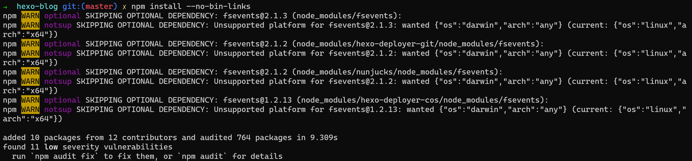
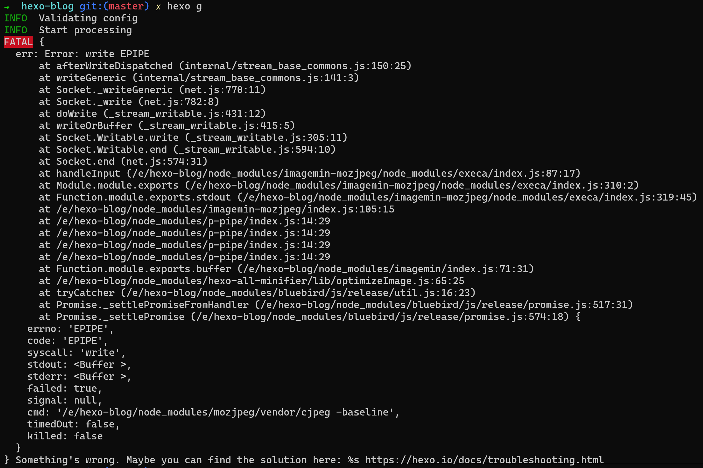
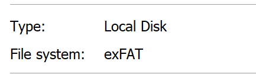

TL;DR
如果在WSL中遇到了 Error: EPERM: operation not permitted, symlink 或者说和symlin 有关的错误的时候，可以先检查一个磁盘的格式是否是NTFS或者ReFS 。
按照惯例昨天晚上写一年一度总结和立flag的博客，运行 npm install 的时候，发现了下面这样的错误：
1 2 3 4 5 6 7 8 9 10 11 12 13 14 15 16 17 18 19 20 21 22 23 24 25 26 27 28 29 30 31 32 npm ERR! code EPERM npm ERR! syscall symlink npm ERR! path ../esprima/bin/esparse.js npm ERR! dest /e/hexo-blog/node_modules/.bin/esparse npm ERR! errno -1 npm ERR! Error: EPERM: operation not permitted, symlink '../esprima/bin/esparse.js' -> '/e/hexo-blog/node_modules/.bin/esparse' npm ERR! [OperationalError: EPERM: operation not permitted, symlink '../esprima/bin/esparse.js' -> '/e/hexo-blog/node_modules/.bin/esparse' ] { npm ERR! cause: [Error: EPERM: operation not permitted, symlink '../esprima/bin/esparse.js' -> '/e/hexo-blog/node_modules/.bin/esparse' ] { npm ERR! errno: -1, npm ERR! code: 'EPERM' , npm ERR! syscall: 'symlink' , npm ERR! path: '../esprima/bin/esparse.js' , npm ERR! dest: '/e/hexo-blog/node_modules/.bin/esparse' npm ERR! }, npm ERR! stack: "Error: EPERM: operation not permitted, symlink '../esprima/bin/esparse.js' -> '/e/hexo-blog/node_modules/.bin/esparse'" , npm ERR! errno: -1, npm ERR! code: 'EPERM' , npm ERR! syscall: 'symlink' , npm ERR! path: '../esprima/bin/esparse.js' , npm ERR! dest: '/e/hexo-blog/node_modules/.bin/esparse' , npm ERR! parent: 'hexo-blog' npm ERR! } npm ERR! npm ERR! The operation was rejected by your operating system. npm ERR! It is likely you do not have the permissions to access this file as the current user npm ERR! npm ERR! If you believe this might be a permissions issue, please double-check the npm ERR! permissions of the file and its containing directories, or try running npm ERR! the command again as root/Administrator. npm ERR! A complete log of this run can be found in : npm ERR! /root/.npm/_logs/2021-01-01T13_14_56_876Z-debug.log
我也是一脸懵逼，使用WSL也好几年了，第一次遇到这样的问题。然后去Google了一下，发现了很多文章，但是最主要的解决方案还是来自https://github.com/MicrosoftDocs/WSL/issues/26#issuecomment-206991754
解决方案如下：
Using this I’ve had some luck installing some npm modules, but it still does have issues with permission errors whenever npm tries to rename a file.
INSTALL GLOBAL NPM PACKAGES
npm config set unsafe-perm true
CLEAN CACHE
npm cache clean (注：高版本的npm 需要使用 npm cache verify)
BYPASS SYMLINK ISSUES
npm install --no-bin-links
执行完之后，确实能够成功npm install

当到了一步的时候，你以为你解决了，但是打脸总是猝不及防。

然后又开始懵逼了，然后尝试着干了几件蠢事。
突然想起来，这个硬盘之前是被我当作移动硬盘的，是不是格式不对。

当这里，终于发现了一丝丝希望。
然后查看了WSL的文档（https://docs.microsoft.com/en-us/archive/blogs/wsl/wsl-file-system-support#drvfs ），发现了如下描述，请注意加粗的那句话。
To facilitate interoperability with Windows, WSL uses the DrvFs file system. WSL automatically mounts all fixed drives with supported file systems under /mnt, such as /mnt/c, /mnt/d, etc. Currently, only NTFS and ReFS volumes are supported.（当前，仅支持NTFS和ReFS卷）
然后格式磁盘为NTFS，再次尝试。一切都好了。